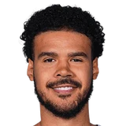

Sean Marks on Cam Johnson's free agency:
“Cam knows how we feel. We hope he's back... He's a big priority for us, there's no question of that.”

6 quotes about Cameron Johnson from 6 players, coaches and executives, newest first. Each one links to its original source.
Sean Marks on Cam Johnson's free agency:
“Cam knows how we feel. We hope he's back... He's a big priority for us, there's no question of that.”
Jacque Vaughn saidCam Johnson is closer to returning than Nic Claxton:
“They're both improving, but we listed Cam Johnson as doubtful, which probably means that he's closer to playing than Nic is.”
Nets coachJordi Fernandez on former Suns fan favorite Cam Johnson:
“He’s a fan favorite for us too, so he’s in the same role…He’s about all the right things and what we’re trying to do moving forward, so very, very happy to have him with us.”
What Cameron Johnson has said about other players and coaches →
Nets coachJordi Fernandez on former Suns fan favorite Cam Johnson:
“He’s a fan favorite for us too, so he’s in the same role…He’s about all the right things and what we’re trying to do moving forward, so very, very happy to have him with us.”
Jacque Vaughn on whether Cam Johnson will be on a minutes restriction:
“I wouldn't envision Cam playing more than he did that first game.”
Jacque Vaughn saidCam Johnson is closer to returning than Nic Claxton:
“They're both improving, but we listed Cam Johnson as doubtful, which probably means that he's closer to playing than Nic is.”
Kristian Winfield:Mikal Bridges on #Nets restricted free agent Cam Johnson:
“He definitely knows I want him here (in Brooklyn) and nowhere else.”
Sean Marks on Cam Johnson's free agency:
“Cam knows how we feel. We hope he's back... He's a big priority for us, there's no question of that.”
Gerald Bourguet:Monty on Cam Johnson's shooting slump:
“You know the work that he puts in is gonna pay off.”